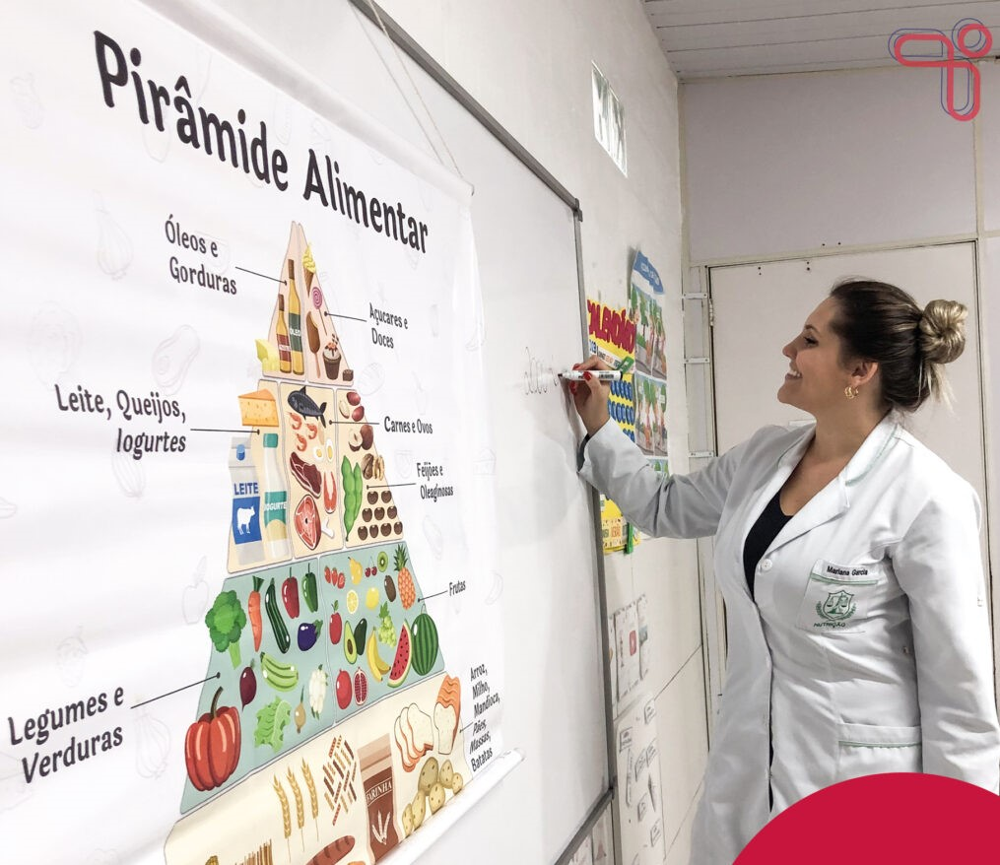

Como solucionar o problema da desnutrição
1. Melhorar o acesso à alimentação adequada e nutritiva
- Segurança alimentar: Garantir que todas as pessoas tenham acesso físico e econômico a alimentos suficientes e nutritivos.
- Programas de alimentação escolar: Oferecer refeições balanceadas nas escolas.
- Incentivo à agricultura familiar: Apoiar pequenos produtores locais para aumentar a oferta de alimentos frescos e acessíveis.
2. Educação nutricional
- Campanhas públicas: Ensinar boas práticas alimentares, principalmente para gestantes, lactantes e famílias com crianças pequenas.
- Capacitação de profissionais de saúde: Para orientar a população sobre nutrição, aleitamento materno e práticas de higiene.

3. Combate à pobreza e desigualdade
- Transferência de renda: Programas como o Bolsa Família ajudam a garantir recursos mínimos para alimentação.
- Geração de emprego e renda: Melhorar as condições socioeconômicas é essencial para combater a desnutrição de forma sustentável.
4. Fortalecimento dos serviços de saúde
- Monitoramento do crescimento infantil: Acompanhamento regular de peso e altura nas unidades de saúde.
- Suplementação nutricional: Distribuição de vitaminas e minerais em populações vulneráveis (como ferro e vitamina A).
- Tratamento da desnutrição aguda: Com alimentos terapêuticos prontos para uso (como o "Plumpy'Nut").
5. Saneamento básico e acesso à água potável
- Muitas doenças que causam ou agravam a desnutrição (como diarreias) estão ligadas à falta de saneamento e água limpa.
6. Políticas públicas consistentes
- Coordenação entre setores: Saúde, educação, agricultura e assistência social devem atuar juntos.
- Planejamento de longo prazo: A desnutrição precisa ser tratada como uma prioridade nacional.